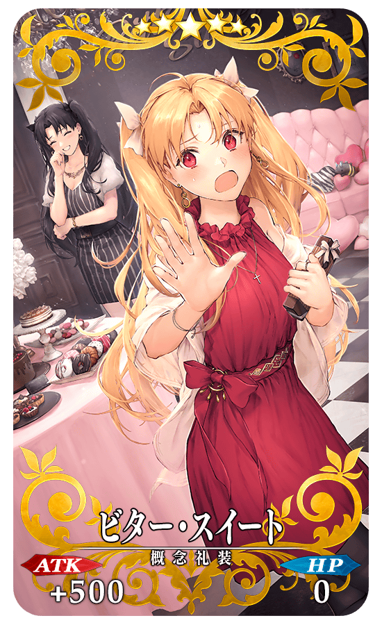
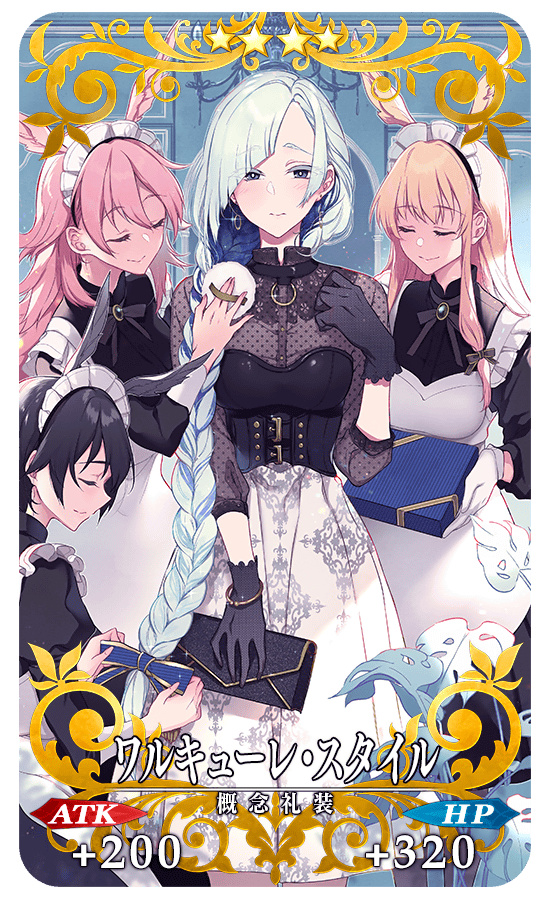
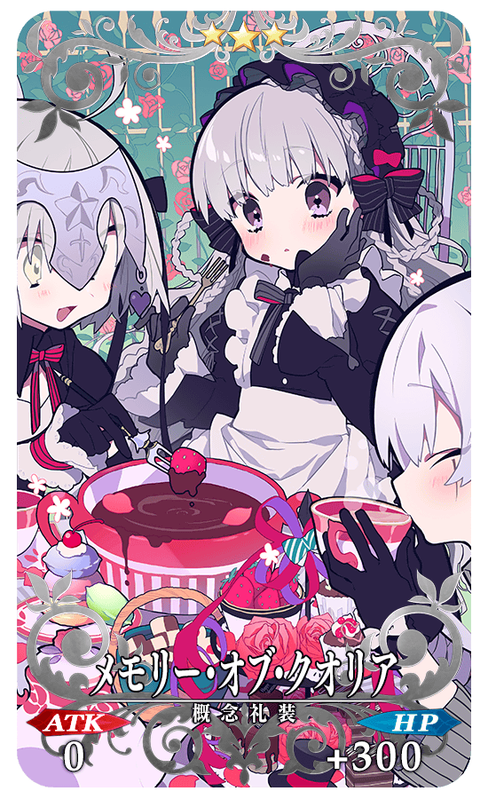
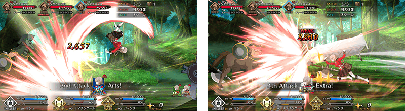

◆「情人節2019Pick Up召喚(每日交替)」期間◆
期間:2019年2月6日(三) 17:00～2月20日(三) 11:59
舉辦期間限定「情人節2019Pick Up召喚(每日交替)」！
在期間限定活動「情人節2019 語音＆書信收藏！～紫式部與7本詛咒書～」活躍的「★5(SSR)紫式部」以期間限定新登場！
並且本次舉辦只限女性Servant做為對象的「情人節2019Pick Up1召喚(每日交替)」「情人節2019Pick Up2召喚(每日交替)」2種召喚。
「情人節2019Pick Up1召喚(每日交替)」及「情人節2019Pick Up2召喚(每日交替)」中對象★5(SSR)女性Servant以每日交替Pick Up，「★5(SSR)紫式部」常駐Pick Up。
| 「情人節2019Pick Up1召喚(每日交替)」舉辦期間 |
|---|
| 「情人節2019Pick Up2召喚(每日交替)」舉辦期間 |
|---|
※請注意「情人節2019Pick Up1召喚(每日交替)」與「情人節2019Pick Up2召喚(每日交替)」舉辦期間有所差異。
詳情請在聖晶石召喚畫面左下的召喚詳細確認。
「★5(SSR)ビター・スイート」「★4(SR)ワルキューレ・スタイル」「★3(R)メモリー・オブ・クオリア」做為期間限定概念禮裝登場！
裝備上述3種的概念禮裝的話，在期間限定活動「情人節2019 語音＆書信收藏！～紫式部與7本詛咒書～」中會提升活動收集道具的掉落獲得數。
◆有關Servant的注意◆
※紫式部在Pick Up期間結束後不會追加到故事召喚。
※除了性別「女性」的Servant外，恩奇杜、夏爾・德翁、阿斯托爾福也包含在抽出對象。
※「情人節2019Pick Up1召喚(每日交替)」的Pick Up期間中，阿爾托莉亞・潘德拉剛(Lancer)、魁札爾・科亞特爾(Rider)、志度內就算通過章節前也能入手。
※「情人節2019Pick Up2召喚(每日交替)」的Pick Up期間中，女王梅芙(Rider)就算通過章節前也能入手。
※請注意「情人節2019Pick Up召喚(每日交替)」做為每日交替，阿爾托莉亞・潘德拉剛(Lancer)、魁札爾・科亞特爾(Rider)、女王梅芙(Rider)、志度內就算Pick Up期間中也會有不被抽出的日子。
※以每日交替Pick Up的★5(SSR)女性Servant在Pick Up期間結束後仍會在故事召喚被抽出。
※關於隱藏真名的Servant，透過主線關卡的進行度會讓Servant及一部份寶具的名稱變化
◆有關Servant真名的注意◆
在2018年12月31日(一) 23:00以後新配信的主線故事及期間限定活動、宣傳活動及召喚，會顯示隱藏真名的對象Servant真名。
※已經配信的主線故事、復刻活動中不在此限。
◆有關概念禮裝的注意◆
※請注意做為抽出對象的期間限定概念禮裝只限「★5(SSR)ビター・スイート」「★4(SR)ワルキューレ・スタイル」「★3(R)メモリー・オブ・クオリア」，其他的期間限定概念禮裝為抽出對象外。
※メモリー・オブ・クオリア在Pick Up期間中，也能在友情點數召喚獲得。
※請注意自友情點數召喚抽出的メモリー・オブ・クオリア在自動變還設定登錄★3(R)概念禮裝的情況，會變成自動變還的對象。
Pick Up期間中，期間限定Servant、Pick Up Servant、期間限定概念禮裝的出現機率提升！
10次召喚中確定1張★4(SR)以上和確定1位★3(R)以上的Servant！
※確定★4(SR)以上包含Servant和概念禮裝。
◆「情人節2019Pick Up召喚(每日交替)」每日交替Pick Up內容◆
| 每日交替Pick Up期間 | 每日交替Pick Up1內容 | 每日交替Pick Up2內容 |
|---|---|---|
| 2月6日(三) 17:00～ 2月7日(四) 22:59 |
紫式部 | 舉辦期間外 |
| 2月7日(四) 23:00～2月8日(五) 22:59 | 紫式部 阿提拉(Saber) |
紫式部 南丁格爾 |
| 2月8日(五) 23:00～2月9日(六) 22:59 | 紫式部 俄里翁 |
紫式部 女王梅芙(Rider) |
| 2月9日(六) 23:00～2月10日(日) 22:59 | 紫式部 阿爾托莉亞・潘德拉剛 (Lancer) |
紫式部 玄奘三藏 |
| 2月10日(日)23:00～2月11日(一) 22:59 | 紫式部 魁札爾・科亞特爾(Rider) |
紫式部 開膛手傑克 |
| 2月11日(一) 23:00～2月12日(二) 22:59 | 紫式部 安娜塔西亞 |
紫式部 貞德(Ruler) |
| 2月12日(二) 23:00～2月13日(三) 22:59 | 紫式部 刑部姬 |
紫式部 莫德雷德(Saber) |
| 2月13日(三) 23:00～2月14日(四) 22:59 | 紫式部 志度內 |
紫式部 弗朗西斯・德雷克 |
| 2月14日(四) 23:00～2月15日(五) 22:59 | 紫式部 阿爾托莉亞・潘德拉剛 (Saber) |
紫式部 玉藻前(Caster) |
| 2月15日(五) 23:00～2月16日(六) 22:59 | 紫式部 布拉達曼特 |
紫式部 不夜城的Caster (雪赫拉莎德) |
| 2月16日(六) 23:00～ 2月20日(三) 11:59 |
紫式部 | 舉辦期間外 |
※請注意會以每日交替變更Pick Up的Servant。
|  |
★★★★★SSR |
|  |
★★★★SR
|

|  |
★★★R |


※上述「★5(SSR)阿提拉(Saber)」的立繪為靈基再臨第2階段。
※上述「★5(SSR)阿爾托莉亞・潘德拉剛(Saber)」的立繪為靈基再臨第2階段。

※上述「★5(SSR)俄里翁」的立繪為靈基再臨第2階段。
※上述「★5(SSR)阿爾托莉亞・潘德拉剛(Lancer)」的立繪為靈基再臨第2階段。

※上述「★5(SSR)布拉達曼特」的立繪為靈基再臨第2階段。

※上述「★5(SSR)魁札爾・科亞特爾(Rider)」的立繪為靈基再臨第2階段。

※上述「★5(SSR)刑部姬」的立繪為靈基再臨第2階段。

※上述「★5(SSR)志度內」的立繪為靈基再臨第2階段。
※上述「★5(SSR)莫德雷德(Saber)」的立繪為靈基再臨第2階段。


※上述「★5(SSR)開膛手傑克」的立繪為靈基再臨第2階段。
※上述「★5(SSR)南丁格爾」的立繪為靈基再臨第2階段。
※上述「★5(SSR)貞德(Ruler)」的立繪為靈基再臨第2階段。
介紹紫式部的寶具演出！
另外，在「Fate/Grand Order」官方網站內的公告中，公開了「★5(SSR)紫式部」的寶具演出。敬請確認。
翻新「★5(SSR)南丁格爾」的戰鬥動作及寶具演出！
另外，在「Fate/Grand Order」官方網站內的公告中，公開了「★5(SSR)南丁格爾」的寶具演出。敬請確認。
◆翻新時間◆
2019年2月6日(三) 17:00～(預定)

介紹阿提拉(Saber)、阿爾托莉亞・潘德拉剛(Saber)、俄里翁、阿爾托莉亞・潘德拉剛(Lancer)、布拉達曼特、魁札爾・科亞特爾(Rider)、安娜塔西亞、刑部姬、志度內的寶具演出！
另外，在「Fate/Grand Order」官方網站內的公告中，公開了「★5(SSR)阿提拉(Saber)」「★5(SSR)阿爾托莉亞・潘德拉剛(Saber)」「★5(SSR)俄里翁」「★5(SSR)阿爾托莉亞・潘德拉剛(Lancer)」「★5(SSR)布拉達曼特」「★5(SSR)魁札爾・科亞特爾(Rider)」「★5(SSR)安娜塔西亞」「★5(SSR)刑部姬」「★5(SSR)志度內」的寶具演出。敬請確認。
介紹莫德雷德(Saber)、女王梅芙(Rider)、弗朗西斯・德雷克、玄奘三藏、玉藻前(Caster)、不夜城的Caster(雪赫拉莎德)、開膛手傑克、貞德(Ruler)的寶具演出！
另外，「Fate/Grand Order」官方網站內的公告中，公開了「★5(SSR)莫德雷德(Saber)」「★5(SSR)女王梅芙(Rider)」「★5(SSR)弗朗西斯・德雷克」「★5(SSR)玄奘三藏」「★5(SSR)玉藻前(Caster)」「★5(SSR)不夜城的Caster(雪赫拉莎德)」「★5(SSR)開膛手傑克」「★5(SSR)貞德(Ruler)」的寶具演出。敬請確認。
關於可得到豪華報酬和來自Servant情人節禮物的期間限定活動「情人節2019 語音＆書信收藏！～紫式部與7本詛咒書～」的詳情請自下述橫幅確認。